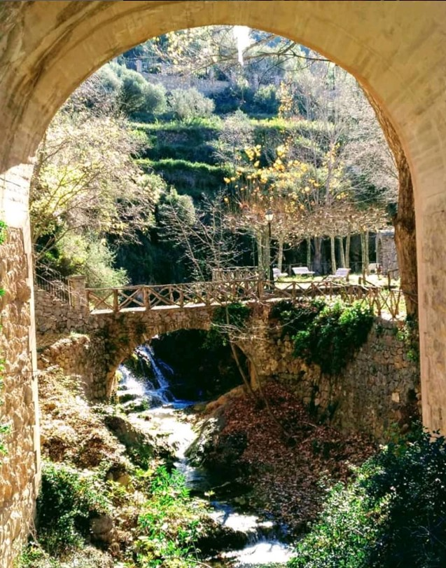
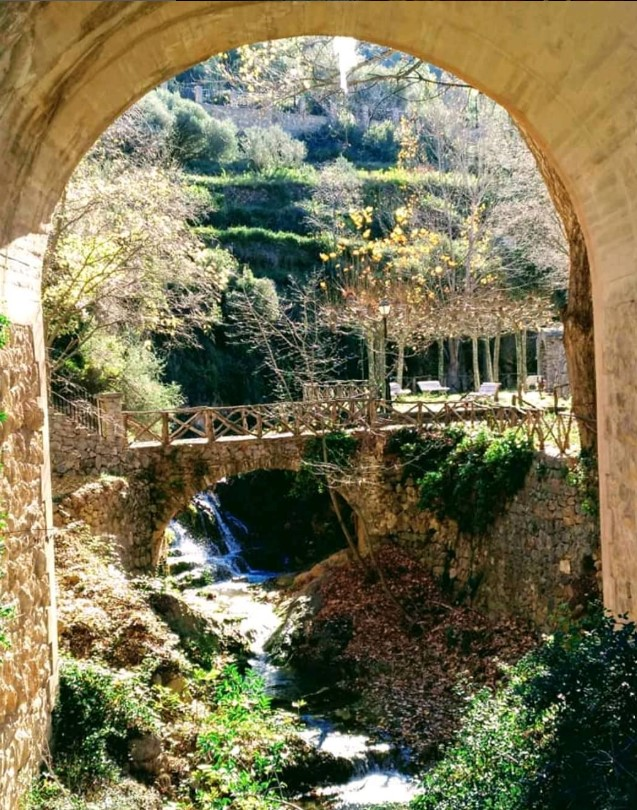

Casa Elina I 🌿
Casa Elina I es perfecta tanto para grupos grandes como para escapadas románticas. Situada en el corazón de Lucena del Cid, ofrece una experiencia de descanso, naturaleza y tradición.
Ideal para familias y grupos que buscan tranquilidad, cuenta con amplias zonas comunes, cocina equipada, chimenea y cinco habitaciones acogedoras.
La decoración combina elementos tradicionales de labranza con toques modernos, evocando la historia agrícola de la zona y el encanto rural de Lucena.
 
